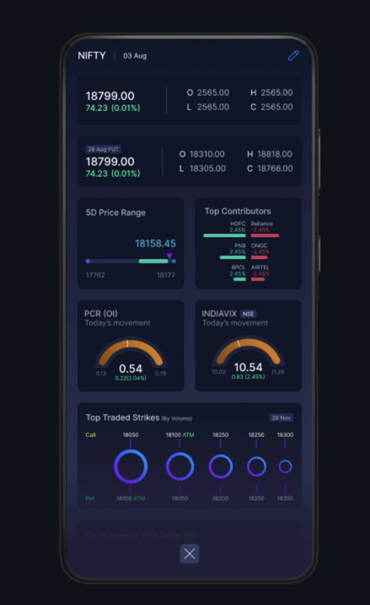
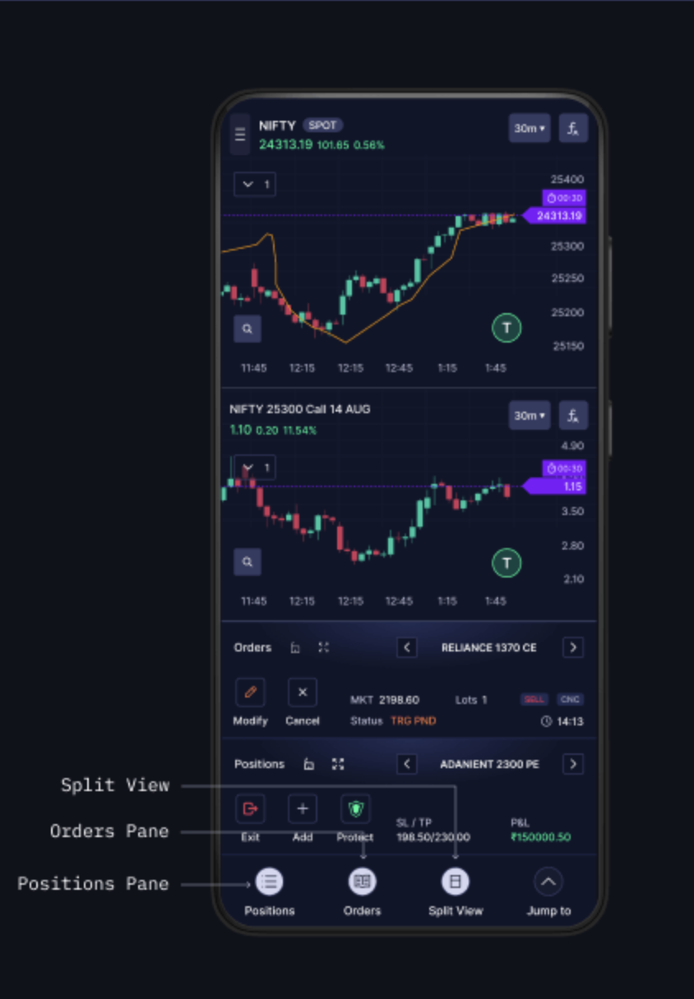

Drove development of a single-screen Futures & Options and stock trading mobile application across iOS and Android at Punch Trade. Architected KMP / KMM solutions enabling shared business logic, designed a KMP SDK for onboarding and KYC, and built a custom widget framework for real-time market data.


Building a feature-rich trading platform that works seamlessly on both iOS and Android requires a strategy that maximizes code reuse without sacrificing native performance. The single-screen trading experience demanded real-time data streaming, low-latency order execution, and pixel-perfect UI across both platforms.
Shared business logic across iOS & Android
Native iOS UI layer and platform APIs
Native Android UI with declarative patterns
Real-time market data streaming
Cross-platform networking and API client
Cross-platform local data persistence